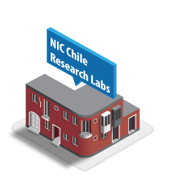

ABOUT
NIC Chile Research Labs is the Internet Laboratory of Faculty of Physical and Mathematical Sciences of the University of Chile (FCFM), funded by NIC Chile.
Our main research areas are: Internet protocols (layer 3-4), DNS, Internet QoS, Internet QoE, Internet of Things, vehicular and computer networks.
We are based in Santiago, Chile, in front of FCFM, Universidad de Chile.
